220
UNIDADE 7 - CAPÍTULO 1
UNIDADE 7 - Proporcionalidade
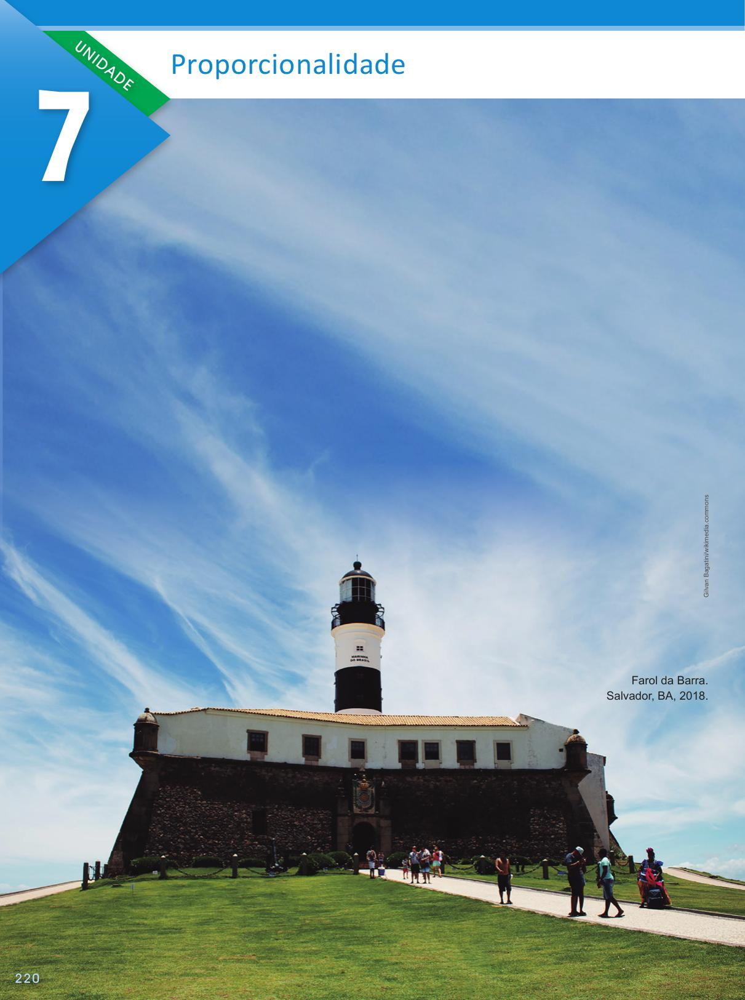221
UNIDADE 7 - CAPÍTULO 1
Fotografias e objetos podem ser reduzidos ou ampliados em diversas situações. A ampliação, por exemplo, é um recurso muito usado em mostras fotográficas, cujas imagens costumam ser expostas em tamanhos aumentados. Já a redução costuma ser utilizada para fazer miniaturas de monumentos, constituindo os famosos souvenirs de viagens.
CONVERSE
1. Ao ampliar ou reduzir uma fotografia, as imagens nela retratadas ficam proporcionais? Justifique a sua resposta.
2. Na página anterior temos a fotografia original que foi tirada do Farol da Barra em Salvador. Essa fotografia sofreu uma redução de tamanho conforme as imagens 1 e 2. Porém, em uma delas não foi feita a redução de maneira correta. Qual delas representa proporcionalmente a fotografia original? Explique.
222
UNIDADE 7 - CAPÍTULO 1
CAPÍTULO 1 - Razão e proporção
Razão
A polenta é um típico prato da culinária italiana e muito apreciada no Brasil. Produzida à base de farinha de milho e sua textura pode variar.
Para cozinhar uma porção de polenta, Maria usa 2 partes de farinha para cada 5 partes de água. Ela dissolve a farinha em duas partes de água fria em um recipiente separado, enquanto ferve 3 partes de água, adicionando sal e caldo de galinha para o tempero. Então, ela junta a farinha já dissolvida na panela com água quente e mexe por 45 minutos, aproximadamente, até que a polenta esteja bem cozida.

1. Troque ideias com um colega e, no caderno, construam um quadro com 3 colunas, conforme o modelo, e indiquem quantas partes de farinha e água são necessárias para fazer uma porção, duas porções e três porções de polenta.
► Podemos dizer que a quantidade de água e farinha de milho aumenta proporcionalmente de acordo com a quantidade de porções que se quer fazer?
Você percebeu que para se fazer a polenta, é necessário para cada 2 partes de farinha de milho, 5 partes de água. Portanto:
Temos que 2 para 5 é a razão entre a quantidade de farinha de milho e a quantidade de água utilizada.
Representamos uma razão por meio de um quociente. Veja:
2 para 5 ou 2 : 5 ou \(\frac{2}{5}\)
223
UNIDADE 7 - CAPÍTULO 1
Ou ainda podemos escrever:
\(\dfrac{farinha \medspace de \medspace milho}{água} = \dfrac{2}{5} = \dfrac{4}{10} = \dfrac{6}{15} = ....\)
Agora, observe algumas situações:
Situação 1
Em uma concessionária, de cada 10 carros vendidos, 7 são da cor prata. Qual é a razão entre a quantidade de carros prata em relação ao total de carros vendidos? Se essa concessionária vender 20 carros, quantos serão da cor prata?
Razão = \(\dfrac{7}{10}\)
Como em cada 10 carros vendidos, 7 são da cor prata, então se a concessionária vender 20 carros, 14 serão da cor prata.
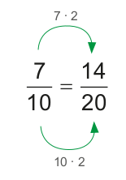Situação 2
Em um campeonato de futebol na escola de Jonas, de cada 10 gols, 4 foram marcados por Juliano. Qual é a razão da quantidade de gols marcados por Juliano em relação ao total de gols marcados? Qual porcentagem que ela representa?
Razão: \( \dfrac{4}{10} = \dfrac{2}{5} \)
Porcentagem:
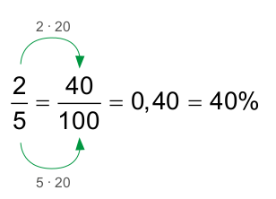A razão é \(\dfrac{2}{5}\) e representa 40% do total de gols marcados.
224
UNIDADE 7 - CAPÍTULO 1
ENCONTRE SOLUÇÕES
1. Grandeza é tudo que pode ser medido ou contado, como comprimento, área, temperatura, massa, tempo, velocidade, etc. Quando escrevemos a razão entre duas grandezas, devemos verificar a ordem em que elas estão representadas. Observe o quadriculado:
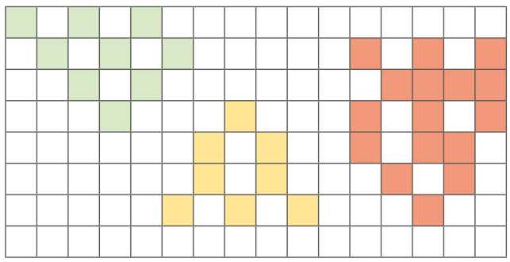Escreva:
a) a razão entre a área ocupada pelos quadradinhos verdes e a área ocupada pelos quadradinhos amarelos;
b) a razão entre a área ocupada pelos quadradinhos amarelos e a área ocupada pelos quadradinhos vermelhos;
c) a razão entre a área ocupada pelos quadradinhos verdes e a área ocupada pelos quadradinhos vermelhos;
d) a razão entre a área ocupada pelos quadradinhos verdes e a área total do quadriculado;
e) a razão entre a área ocupada pelos quadradinhos amarelos e a área total do quadriculado;
f) a razão entre a área ocupada pelos quadradinhos vermelhos e a área total do quadriculado;
g) a razão entre a área colorida e a área total do quadriculado.
2. O segmento \(\overline{AB}\) está dividido em 3 segmentos de medidas diferentes.
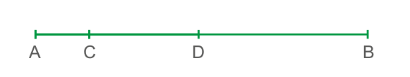Com o auxílio de uma régua meça os segmentos \(\overline{AC}\), \(\overline{CD}\) e \(\overline{DB}\) e escreva em seu caderno:
a) a razão entre as medidas dos segmentos \(\overline{AC}\) e \(\overline{CD}\);
b) a razão entre as medidas dos segmentos \(\overline{AC}\) e \(\overline{DB}\);
c) a razão entre as medidas dos segmentos \(\overline{AC}\) e \(\overline{AB}\);
d) a razão entre as medidas dos segmentos \(\overline{CD}\) e \(\overline{AB}\).
3. Em uma festa infantil há 32 crianças sendo que 24 são meninas e 8 são meninos. Determine:
a) a razão do número total de meninas em relação ao número total de meninos;
b) a razão do número total de meninos em relação ao número total de meninas;
c) a razão do número total de meninos em relação ao número total de crianças;
d) a razão do número total de meninas em relação ao número total de crianças.
4. Para fazer um creme de milho, Joana comprou um pacote de 47 g. No envelope constava o modo de preparo:
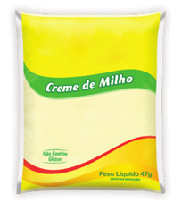225
UNIDADE 7 - CAPÍTULO 1
► Dissolva o conteúdo deste envelope em 2 xícaras de chá de água fria, e meia xícara de chá de leite frio.
► Ferva a mistura em uma panela semitampada em fogo médio por 5 minutos, mexendo de vez em quando e sirva em seguida.
Determine a razão entre a quantidade de leite e a quantidade de água fria necessária.
5. Em seu caderno, elabore um problema envolvendo o conceito de razão e proporção. Em seguida, peça a um colega que resolva o problema elaborado por você. Juntos, verifiquem se a resolução apresentada está correta.

Razões especiais
Densidade demográfica
![Mapa do Estado de São Paulo em amarelo com o nome das cidades. À esquerda, em cinza, a divisa com o estado de Mato Grosso do Sul. À direita acima, em cinza, a divisa com Minas Gerais. Abaixo à esquerda, em cinza, a divisa com o Paraná. Mais abaixo à esquerda, o mapa do Brasil. Em destaque um retângulo amarelo delimitando o estado de São Paulo, localizado na região sudeste do Brasil. No canto inferior e direito do mapa o cruzeiro do Sul, indicando N para cima, Sul para baixo, Oeste para a esquerda e Leste para a Direita.](../../resources/images/unidade7/capitulo1/imagem12.png)
De acordo o IBGE, a população estimada do estado de São Paulo é de 46 649 132 habitantes e a área do estado de 248 219,481 km². São Paulo é o estado mais populoso do Brasil.
Conhecendo a quantidade de habitantes de uma região e a sua área podemos calcular a quantidade de habitantes por km². Esta razão é denominada de densidade demográfica.
Vamos calcular a densidade demográfica do estado de São Paulo:
Densidade demográfica \(\dfrac{46649132}{248219,481} ≃ 187,94 \medspace hab/km²\)
A densidade demográfica do estado de São Paulo é de, aproximadamente, 187,94 habitantes por km2.
Densidade demográfica = \(\dfrac{número \medspace de \medspace habitantes}{área \medspace ocupada \medspace por \medspace esses \medspace \medspace habitantes}\)
226
UNIDADE 7 - CAPÍTULO 1
Velocidade média
Joana costuma viajar de Recife para Maceió duas vezes por mês. A distância entre essas duas cidades, viajando de carro, é de 258 km. Normalmente ela leva 4 horas para percorrer essa distância. Qual é a velocidade média desse carro, em km/h, nessas viagens?
Podemos calcular a velocidade média de um automóvel, trem ou pessoa, por exemplo, conhecendo a distância a ser percorrida e o tempo gasto para percorrê-la. Observe:
Velocidade média \(\dfrac{258 \medspace km}{4 \medspace h} = 64,5 \medspace km/h\)
A velocidade média do carro nessas viagens é de 64,5 km/h.
A velocidade média (Vm) é a razão entre a distância (d) percorrida e o tempo (t) gasto para percorrê-la.
Escala
Quando um arquiteto faz a representação de uma casa, ele faz por meio de uma planta baixa. Veja a seguir a planta baixa de uma casa qualquer.
![Ilustração da planta de uma casa, em escala de 1:100. A planta retangular é composta por sete cômodos. Do lado superior da planta, no canto esquerdo, uma abertura, representa uma porta, que dá acesso a casa, diretamente à sala. Um corredor sai da sala, que está do lado esquerdo, e vai até o quarto 1, que fica no final da planta, lado direito, dividindo a casa em parte superior e inferior. Na parte superior, da esquerda para a direita, a partir da sala, estão a cozinha, área de serviço e banheiro. Na parte inferior, também a partir da sala tem o quarto 2 e o quarto 3. O quarto 3, localizado no canto inferior direito da planta, é um retângulo, e está demarcado em 4 de base e 3 de altura.](../../resources/images/unidade7/capitulo1/imagem14.png)
227
UNIDADE 7 - CAPÍTULO 1
Para fazer uma planta como essa, precisamos utilizar uma escala.
Escala é a razão entre as medidas do desenho e as medidas reais.
No caso da planta anterior a escala utilizada foi de 1 : 100 ou \(\frac{1}{100}\) (1 para 100), isso significa que para cada 1 cm medido no desenho corresponde a 100 cm na medida real, ou seja, 1 m.
Verificando as medidas representadas do quarto no desenho e as medidas reais, percebe-se que:
Portanto, as medidas do quarto no desenho são 3 cm e 4 cm, e as medidas reais são 300 cm ou 3 m e 400 cm ou 4 m. Utilizando uma régua, você pode comprovar as medidas representadas no desenho.
Quando utilizamos uma escala para elaborar um mapa ou uma planta baixa, as medidas do desenho são proporcionais às medidas reais.
ENCONTRE SOLUÇÕES
1. Um ônibus percorreu 238 km em 3 horas e meia. Qual é a velocidade média desse ônibus?
2. Um mapa está desenhado na escala 1 : 1 000 000. Sendo assim, quantos km representa a medida real para cada 2 cm medidos no mapa?
3. Em 2010, de acordo com o censo do IBGE, a cidade de Recife possuía 1 537 704 distribuídos em 218,44 km². Com o auxílio de uma calculadora, determine a densidade demográfica aproximada dessa cidade.

228
UNIDADE 7 - CAPÍTULO 1
4. Observe abaixo o mapa do estado da Bahia. Qual foi a escala utilizada para construir este mapa? O que essa escala representa?
![Mapa do Estado da Bahia em amarelo com o nome das cidades. À esquerda, em cinza, a divisa com o estado de Mato Grosso do Sul. À esquerda acima, em cinza, a divisa com Piauí, Maranhão. Acima à direita, a divisa com Pernambuco, Alagoas e Sergipe. À esquerda, a divisa com Tocantins. Abaixo, à esquerda, a divisa com Goiás, Distrito Federal. Abaixo: Minas Gerais e Espírito Santo. À direita em azul o Oceano Atlântico. No canto inferior esquerdo, o mapa do Brasil. Em destaque um retângulo amarelo delimitando o estado da Bahia, localizado na região Nordeste do Brasil. No canto inferior e direito do mapa o cruzeiro do Sul, indicando N para cima, Sul para baixo, Oeste para a esquerda e Leste para a Direita.](../../resources/images/unidade7/capitulo1/imagem18.png)
5. Observe no quadro as informações de alguns estados brasileiros de acordo com o IBGE.
a) Determine a densidade demográfica de cada um desses estados.
b) Qual é o estado que apresenta a maior densidade demográfica?
c) Qual é o estado que apresenta a menor densidade demográfica?
6. O velocímetro do carro de Júlia está mostrando a seguinte velocidade:
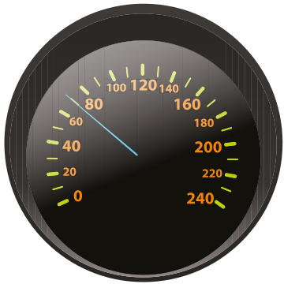Esta é a velocidade média do seu carro para percorrer 210 km. Quanto tempo ela irá levar para percorrer essa distância?
229
UNIDADE 7 - CAPÍTULO 1
7. Vamos calcular as medidas reais deste apartamento? Com o auxílio de uma régua, meça as medidas do comprimento e largura de cada um dos cômodos. Sabendo que a escala utilizada para elaboração da planta baixa foi de 1 : 150, represente, em seu caderno, a planta a seguir indicando as medidas reais de cada cômodo.
![Ilustração da planta de uma casa retangular, composta por sete cômodos. Do lado inferior da planta, no canto esquerdo, uma abertura representa uma porta, que dá acesso à casa, diretamente à sala de estar. Ainda na parte inferior, a partir da sala de estar, temos: um quarto e uma suíte. Na parte superior, da esquerda para a direita, estão localizados: uma cozinha, uma sala de jantar, um banheiro e um outro banheiro, que é o anexo da suíte.
Observação: para resolver a questão, peça ajuda ao professor para fazer a medição dos cômodos.](../../resources/images/unidade7/capitulo1/imagem21.png)
8. A seguir, temos a representação de um campo de futebol em que a lateral mede 100 m.
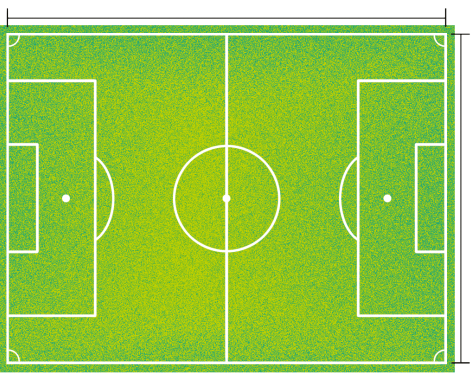a) Com o auxílio de uma régua meça as laterais representadas no desenho.
b) Qual é a escala utilizada nesse desenho?
c) Qual é a medida real da linha de fundo?
9. A distância, em linha reta, entre Curitiba e Brasília é de 1 084 km e o tempo de voo é de aproximadamente 1 hora e 30 minutos. Qual é a velocidade média desenvolvida por uma aeronave para percorrer esse trajeto?
10. (UF-ES) A escala da planta de um terreno, na qual o comprimento de 100 m foi representado, por um segmento de 5 cm é:
a) \(\dfrac{1}{200}\)
b) \(\dfrac{1}{1000}\)
c) \(\dfrac{1}{2000}\)
d) \(\dfrac{1}{10000}\)
e) n.d.a
230
UNIDADE 7 - CAPÍTULO 1
11. (ENEM) A figura 1 representa uma gravura retangular com 8 m de comprimento e 6 m de altura.
![Ilustração de um alienígena vermelho, ícone do jogo de videogame, space invaders. O alienígena é desenhado com formas geométricas, quadrados e retângulos, e assemelha-se a um caranguejo. No centro, um retângulo vermelho com dois quadradinhos brancos nas extremidades, representa a cabeça e os olhos. Acima do retângulo, dois pares de quadradinhos, um sobre o outro, unidos pelas pontas, desenham anteninhas. Nas laterais, do retângulo, as pernas são formadas por dois retângulos verticais, unidos pelos lados. Abaixo, do retângulo, dois pares de retângulo, um na vertical e outro na horizontal, criam os braços, que parecem apoiar no chão. O alienígena está dentro de um retângulo com medida de 8m de base e 6m de altura.](../../resources/images/unidade7/capitulo1/imagem23.png)
Deseja-se reproduzi-la numa folha de papel retangular com 42 cm de comprimento e 30 cm de altura, deixando livres 3 cm em cada margem, conforme a figura 2.
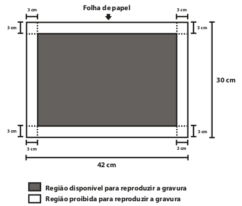A reprodução da gravura deve ocupar o máximo possível da região disponível, mantendo-se as proporções da Figura 1.
A escala da gravura reproduzida na folha de papel é
a) 1 : 3.
b) 1 : 4.
c) 1 : 20.
d) 1 : 25.
e) 1 : 32.
12. (ENEM) A Secretaria de Saúde de um município avalia um programa que disponibiliza, para cada aluno de uma escola municipal, uma bicicleta, que deve ser usada no trajeto de ida e volta, entre sua casa e a escola. Na fase de implantação do programa, o aluno que morava mais distante da escola realizou sempre o mesmo trajeto, representado na figura, na escala 1 : 25 000, por um período de cinco dias.
![Malha quadriculada com 11 colunas e 10 linhas, que mostra o trajeto de um aluno de bicicleta de casa até a escola. Cada lado do quadradinho da malha mede 1 cm. A casa, ponto de partida do trajeto, está localizada na coluna 1, linha 10, e a escola está na coluna 11, linha 2. Do cantinho superior do quadrado da casa sai para cima uma linha que percorre 3 quadradinhos, vira à direita e percorre 3 quadradinhos, então sobe 2 quadradinhos, vira à direita e percorre mais 2, sobe 1, vira à direita e percorre 4 quadradinhos, subindo mais 1 para chegar à escola.](../../resources/images/unidade7/capitulo1/imagem25.png)
Quantos quilômetros esse aluno percorreu na fase de implantação do programa?
a) 4
b) 8
c) 16
d) 20
e) 40
Proporção
Mariana está preparando um suco de maracujá para servir às suas amigas. Ela comprou uma garrafa de suco concentrado que informa: para cada 1 parte de suco concentrado, deve-se colocar 8 partes de água e adoçar a gosto.
1. Troque ideias com um colega e, no caderno, construam um quadro conforme o modelo a seguir e verifiquem quantas partes de água são necessárias em cada uma das situações.
231
UNIDADE 7 - CAPÍTULO 1
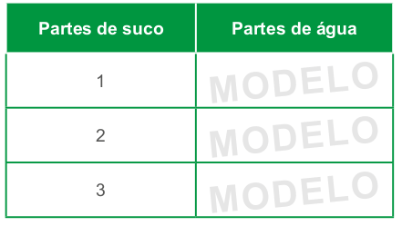a) Escrevam a razão entre a quantidade de partes de suco para a quantidade de partes
b) Podemos afirmar que quando a quantidade de partes de suco concentrado aumenta, a quantidade de água aumenta proporcionalmente? Expliquem.
Nesta situação, podemos constatar que a razão entre a quantidade de suco concentrado e a quantidade de água utilizada para prepará-lo é sempre a mesma, ou seja, é constante. Dessa forma, podemos escrever as seguintes igualdades entre as razões:
► \(\dfrac{1}{8} = \dfrac{2}{16} \medspace\) (lemos: 1 está para 8, assim como 2 está para 16)
► \(\dfrac{2}{16} = \dfrac{3}{24} \medspace\) (lemos: 2 está para 16, assim como 3 está para 24)
► \(\dfrac{1}{8} = \dfrac{3}{24} \medspace\) (lemos: 1 está para 8, assim como 3 está para 24)
A qualquer uma dessas igualdades denominamos proporção.
Proporção é uma igualdade entre razões.
Propriedade fundamental da proporção
Vamos verificar agora uma propriedade fundamental da proporção. Vejamos:
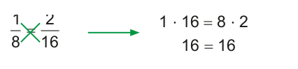232
UNIDADE 7 - CAPÍTULO 1
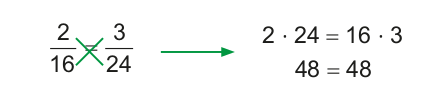 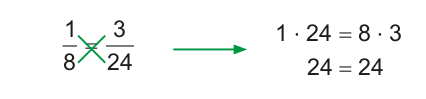Conforme observado, quando multiplicamos os termos de uma proporção de maneira cruzada, os resultados obtidos são iguais. Esses termos são denominados de meio e extremo:
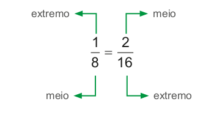Em uma proporção, o produto dos extremos é igual ao produto dos meios.
ENCONTRE SOLUÇÕES
1. Observe os retângulos a seguir:
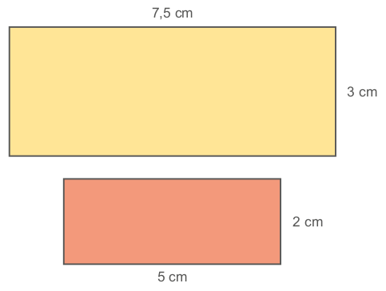Em seu caderno, determine:
a) a razão entre as medidas de comprimento do retângulo maior para o menor;
b) a razão entre as medidas das larguras do retângulo maior para o menor.
► Esses retângulos são proporcionais? Por quê?
2. Em cada uma das proporções abaixo verifique o valor que deve ser colocado no lugar do símbolo ● e escreva em seu caderno.
a) \(\dfrac{2}{3} = \dfrac{10}{●}\)
b) \(\dfrac{●}{7} = \dfrac{40}{56}\)
c) \(\dfrac{11}{9} = \dfrac{●}{99}\)
d) \(\dfrac{15}{●} = \dfrac{1}{5}\)
e) \(\dfrac{●}{144} = \dfrac{5}{24}\)
f) \(\dfrac{31}{●} = \dfrac{93}{39}\)
3. Aplicando a propriedade fundamental da proporção, determine o valor de x.
a) \(\dfrac{5}{7} = \dfrac{42}{x}\)
b) \(\dfrac{x + 1}{4} = \dfrac{9}{2}\)
c) \(\dfrac{8}{x - 6} = \dfrac{30}{7}\)
d) \(\dfrac{x + 2}{3} = \dfrac{5x}{7}\)
e) \(\dfrac{12}{2x - 1} = \dfrac{8}{11}\)
f) \(\dfrac{x + 6}{4} = \dfrac{13}{2}\)